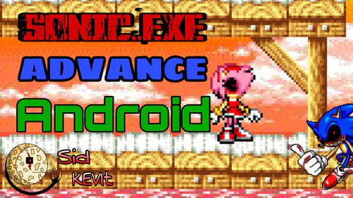
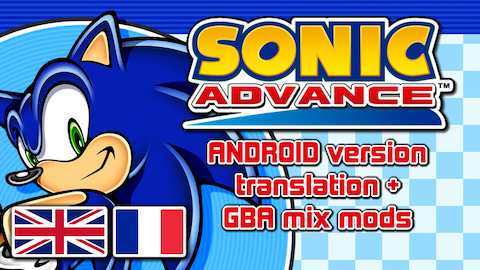
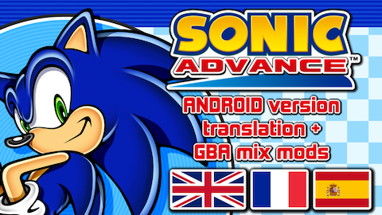
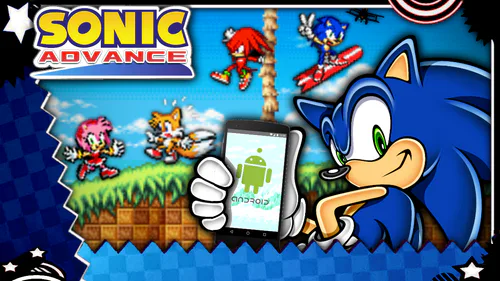
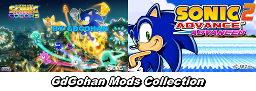
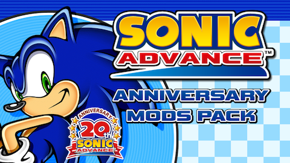
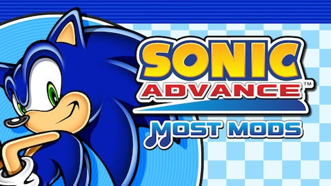
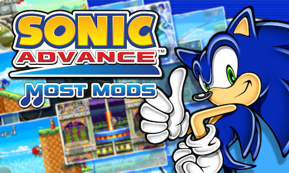
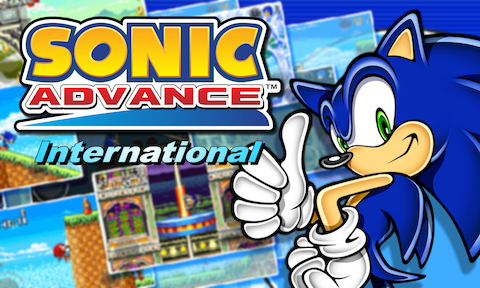

The Android Mods page is dedicated to mods made for the Android port of Sonic Advance throughout history!
This page also contains external links to check project pages and download some of those mods.

The Android Mods page is dedicated to mods made for the Android port of Sonic Advance throughout history!
This page also contains external links to check project pages and download some of those mods.
The Android port of Sonic Advance wasn't popular and wasn't well documented, due to its only-release in Japan. While some Sonic fans in community were aware of its existence, and some people in the community even decompiled the game between 2014 and 2016, most of them weren't interested on working on this port.
The biggest complain that the Android port has is the poor performance (which is actually due to the frame rate intentionally set to 12.5fps, presumably to ensure compatibility with Android phones at the time).

The very first-ever Android port mod ever published is named "SONIC.EXE Advance" by Sid KEVIT (formally named) on May 1st 2018. This is a simple graphic and text swap mod of the 2011 version. In this mod, you take control of Sonic and his friends in their ".exe form" (based on the Sonic.exe creepypasta).
When Furrican was at its early years of smarthpone usage, he wanted to make some of the best Android app collection. And because he was (and still is) a Sonic fan, he wanted to gather all Android apps based on Sonic the Hedgehog.
When he discovered about the Japanese Android port of Sonic Advance back in 2019, he was very happy to find a copy of the game. And while he didn't mind about the frame rate and the bugs, he was not satisfied by the fact that most text are in Japanese.
It was also around this time that Furrican learned about Android app modding. So in late 2019, he decided to make and publish his very first English mod.
The very first Furrican mod was actually released on Aptoide in late 2019. However, Furrican didn't feel satisfied with what he had accomplished. Also, around this time, he discovered 2 websites: Game Jolt and itch.io. So he decided to upload his English mod on those sites, as well as a French mod, since Furrican is French.

JANUARY 30th 2020:
Furrican's first-ever publication on Game Jolt was Sonic Advance (Android version Translation + GBA mix mods).
This is a mods pack containing multiple .apk files.
Each .apk file contains a different language and soundtrack, as there are mods featuring the GBA Mix mod.
Furrican was modding the Android port of Sonic Advance ever since and was releasing several patches over time.
MARCH 3rd 2020:
The Translation mods were released on itch.io by the same name.
SEPTEMBER 27th 2020:
The mods got an updated by reducing the size of .ogg files for the GBA Mix soundtrack.
Furrican realized that he can compress some of the music by cutting unused parts of the music tracks, as the game can loop music tracks.

OCTOBER 16th 2020:
The Spanish language has been added to the mods pack.
During this month, the Furrican's mods itch.io page was renamed Sonic Advance Android Mods Collection, as it also SonicStation mods alongside Furrican's mods.
APRIL 20th 2021:
The Furrican's mods got an update (v1.1.0) that extends the screen aspect ratio.
This is where the multi-aspect ratio feature was born.

The most famous mod of the Android port was SonicStation's mod, initially released on Game Jolt on March 23rd 2020. This mod gave the Andoird port of Sonic Advance a fresh look and feel, by changing the graphics in a way to look a bit more modern. Additionally, there are voice acting and Cream the Rabbit was brought as a cameo.
The SonicStation's mod was initally based on the 2011 version of the Andoird port. The project page contains different .apk files for various settings.
This mod became famous among the Sonic community, thanks to SonicStation's YouTube channel. The SonicStation's mod became one of the most recognizable game projects on Game Jolt.
INTRODUCTION:
After Furrican found out about the SonicStation's mod, he decided to team up with SonicStation for a while and share information about the Android port.
Around this time, SonicStation decided to switch over to the 2013 version of the game, as it has better quality text and the soft-lock bug is mitigated.
SEPTEMBER 29th 2020:
The SonicStation's mod received a major update, thanks to the switch to the 2013 version.
OCTOBER 24th 2020:
The SonicStation's mod has been updated once more to reduce the size of the soundtrack, thanks to Furrican's knowledge about the music looping.
MAY 15th 2021:
Finally, the SonicStation's mod received one final update by taking the multi-aspect ratio feature of Furrican's v1.1.0 mods.

Between 2021 and 2024, GdGohan has released multiple mods of the Android port of Sonic Advance on APKPure. All of his mods are taken from the Furrican's and SonicStation's mods, which are based on the 2011 version of the Android port. Down-below is a list of mods that GdGohan has made.
Sonic Advance 2 Advanced is a mod which makes the game look more like Sonic Advance 2. Also, the playable characters got replaced by new characters like Blaze and Shadow.
Sonic Advance Mod 06 is a mod which makes the game look more like Sonic the Hedgehog (2006). In this mod, the playable characters got swapped by characters like Shadow and Silver, and the graphics are blurry to give aesthetics from the game it tried to mimick.
Sonic Advance Generations is a mod made using the SonicStation's mod. While taking inspiration from Sonic Generations, this mod takes elements from other Sonic assets like Sonic Mania. In this mod, the playable characters got swapped by characters like Classic Sonic and Shadow.
Sonic Advance Colors Ultimate is a mod which makes the game look more like Sonic Colors. Released in 2024, this is the last GdGohan owned mod. Unlike GdGohan's other mods, the characters aren't swapped and instead focuses more on the stage graphics and music, making the game looks and feels more like Sonic Colors.

APRIL 20th 2021:
The Furrican's mods are renamed into the Anniversary Mods pack, to celebrate the Sonic Advance's 20th anniversary.
The Anniversary Mods pack (v2.0.0) is a pack of multiple .apk files, following the same structure as the previous Furrican's mod versions.
The Anniversary mods are based on the 2013 version of the Android port of Sonic Advance to take advantage of the higher-quality text and soft-lock bug fixed.
APRIL 23rd 2021:
The Anniversary Mods pack was released on the Sonic Fan Games HQ in order to particapte the Sonic Amateur Game Expo (SAGE) 2021.
This is the first time a mod of the Android port of Sonic Advance got released for an event.
When the SAGE 2021 was released to the public, the Anniversary Mods pack was listed in the MODS section. During release, the mods got attention and was featured in a news article by Mega Visions.
SEPTEMBER 27th 2021:
The Portuguese language has been added to the mods pack.
SEPTEMBER 7th 2022:
The Anniversary Mods pack got an update (v2.1.0) that improves some of the sprite text, as Furrican discovered the logic behind .dat files.
This update has been released around the same time as the Game Jolt's project page reached 100 followers.

MAY 6th 2024:
The Anniversary Mods pack are turned into the MOST Mods (v3.0.0).
This major update introduces a Soundtrack Select menu, which allows the mods to have 2 soundtracks into one .apk file.
The MOST Mods changed the structure of .apk files by combining both .apk file versions related to soundtracks.
These mods are based on the Chinese version of the Android port, which has been archived on the Internet on October 14, 2023. Because of this, the Chinese language is automatically added to the list of languages. Additionally, the MOST Mods introduce 2 new languages: German and Italian. And the languages have been improved, thanks to the N-Gage port of Sonic Advance and its instruction manual.
This version of Sonic Advance has a different main menu with an option for an external link. In the MOST Mods, the external link is used to link the SAGE EXPO 2024 website, as the MOST Mods pack was participating the SAGE 2024.
Right after the MOST Mods released, updates and patches were following, mostly to fix the graphics to better suit higher aspect-ratio, making the multi-aspect ratio feature better than ever before.
MAY 21st 2024:
The MOST Mods received an update (v3.1.0) to replace the Sound Volume option by the then-new Tips Screen (Loading) option.
This option allows players to disable the tips screen and to make the load time before stages way faster.

MAY 23rd 2024:
For the v3.2.0 update, the Sonic Advance mods thumbnail has been updatesd to resemble the thumbnail used in the Android port's page of the Puyo Puyo! Sega website.
Like the Anniversary Mods pack, the MOST Mods pack was uploaded on SFGHQ to participate the SAGE 2024.

DECEMBER 21st 2024:
The MOST Mods pack are turned into the International Mods (v4.0.0).
This major update introduces a Language Select menu and an Auto-language detection.
From this update, players can now change languages without changing .apk files.
Alongside the International mod is a then-new website designed to inform players about future updates, learn tips and hints, and more. This website can be accessible via the external link option in the main menu.
Updates and patches were still on their way, thanks in part to Chinese users like Tate-Bilibili and 任索嘉盒Ninesogabox and beta testers like Sonic Blast, Star and Silas the sonic fan.
MARCH 11th 2025:
The Russian language has been added to the mod (v4.1.0).
The translation has been created by HeavyTuber (now known as Truber Games).
Between January and October 2025, Furrican partnered with GdGohan to work on Sonic mods for the Sonic Hacking Contest (SHC) 2025. GdGohan started tweaking Sonic Advance International in July 2025. Thanks to his greater access to tools, the mod was improving at a faster rate.
And thanks to Sketchware Pro, Sonic Advance on Android can now be modded using Java, instead of Smali, making the source code way easier to modify.
Additionally, GdGohan was uploading videos on his YouTube channel to showcase his works about Sonic Advance International.
October 4, 2025 was the public-release of the SHC 2025, alongside the v4.3.0 of Sonic Advance International. This update has 2 versions: a regular version and a SHC edition. The source code of the SHC version is also available to download via the SONIC HACKING CONTEST link down-below. Both feature a cheat code to unlock all stages, but the SHC edition has a hidden feature named "Co-op game mode". It has been hidden, because this feature is broken and unfinished, but it was included in the SHC edition specifically to showcase Furrican's and GdGohan's programming skills to the contest.
Also, a video trailer was created by Furrican to be featured in the Sonic Hacking Spotlight.
While Sonic Advance International didn't received good enough intention, it marked its way by being the first-ever mod of the Sonic Advance on Android ever published on the Sonic Hacking Contest.